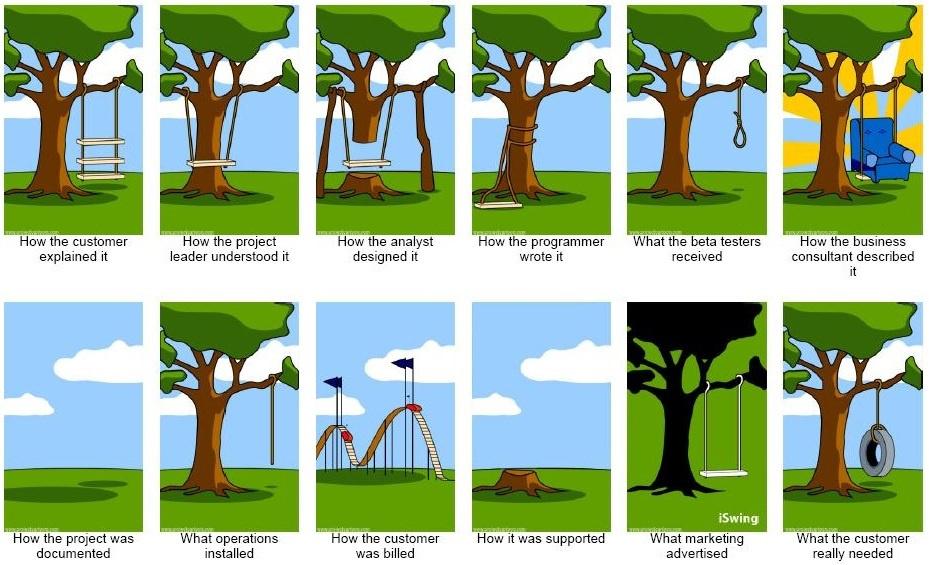

Last modified: Sat May 05 2018 12:46:28 GMT+0800 (Malay Peninsula Standard Time)
What's Next?
I graduated on December 2017. Both my parents flew in for my graduation. That was not their first time here. My mom flew in a few times and the last time she was here when I came here on August 2013. However, the last time my dad was here was in 1990s.
My dad and I were chatting when we were in the car one day. He always want me to go back to help him in his family business. Original plan was to stay here for a year to try to find a job. I submitted and mailed in my paperwork to get the permission to work in US on mid November 2017. However, my mail got lost while in transit. It did not get to where it was supposed to go to. Few months later, February 2018, I received the mail that was lost from the post office. Everything that I submitted was still in one piece. Since it was lost, maybe I should not reapply again?
Finding a job was very difficult here as I do not have any status (Green Card or Citizen). After Trump was elected as the President, things changed very quickly. Companies prefer hiring a local than International Student if they have a chance. Also, International Student was only allowed to work for up to a year without any Visa sponsorship. It is hard for companies to train an engineer and just to let them work for a year (and kick them away?). Also, there is also a lot of competition in Engineering field. A company may choose to hire a Graduate student than a Undergraduate student.
I applied for quite a lot of jobs opening (<100) over the few months period. I received calls from big tech companies like Apple (which means that my resume works) but they are not interested in hiring International Student too. I usually tell the person that contact me about my background as I do not want to waste their time and my time. As expected, all of them say "it is tricky".
I never complain that I never get a job or internship while I was in USA. If most of my friends and classmates that born here are unable to find a job easily, it is ok if I do not get one! At last, I decided to move back to Malaysia after I graduated.
Conclusion
This conclusion was written when I was taking my flights back: 15 hours non-stop SFO - HKIA and 4 hours non-stop HKIA - PEN.
To begin, I had a lot of fun during the last 5 years, especially in the school. There were ups and downs. No matter what I was going through, I always kept myself entertained and enjoyed the process. Most of the time, I ended up being more productive, motivated, and efficient than before. When time was super limited, tasks had to be prioritized. Of course, I always slept at the correct hours (between 10-11pm) and did not shorten my sleep schedule. Sleep is always an important thing in the list that I will never skip.
I remembered there was a semester that I had class one day in the week that began from 9am - 8pm nonstop with just an hour break for lunch. To me, I took it as an experience to myself, but others might think it was a torture. I still could not believed that I had done that. I bet not everyone was able to experience what I went through. I will not complain when something was too tough. Instead, I will always complain if the tasks were too easy.
I met a lot of people during those times in the US. Most of them were very friendly, tolerate, and considerate. We had no issues when it came to scheduling for hangout or meeting. I bet we had a lot of fun spending our time doing everything (homework, outdoor activities, etc) together. Sometimes they might be disagreement here and there, however there was always a point that everyone will agree with one another after a long and friendly debate and discussion.
During the school time, I highly admired and respected people that fully committed to things that they agreed to work on. There happened a few times that people that did not contribute. Well, I could not force them to do it. That was their decision. However, if everyone in the group contribute evenly, things can fly very easily!
If you would like an advice from me, I would say "do not reinvent the wheels". Use any available resource that you have with you and work on it. Do not over-complicate the stuff. Avoid setting a target that you will never achieve in a single time. Always set a MVP (Minimum Viable Product) and work on additional tasks after MVP is achieved. People might disagree with what you have said, but never get disappointed with them. Instead, proof that they are wrong using the correct way.

For those people who said they would like to visit me in the near future, I am looking forward to see you!